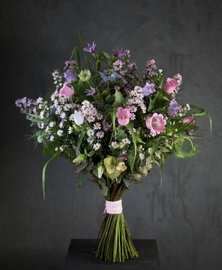

Букет №17

Состав:
астры кустовые, колокольчики, нигелла, клематис, листья папоротника, листья эвкалипта.
В зависимости от сезона, цветы могут быть заменены на анологичные с сохранением цветовой гаммы.
Свяжитесь с нами, чтобы обсудить сорта цветов.
В зависимости от сезона, цветы могут быть заменены на анологичные с сохранением цветовой гаммы.
Свяжитесь с нами, чтобы обсудить сорта цветов.
Как ухаживать за букетом
Подрежьте стебли под размер вазы, но не менее, чем на 1-3 см под углом 45*. Удалите листья, которые могут быть погружены в воду. Для продления жизни цветов добавьте в воду прилагаемую подкормку для цветов. В её состав уже входят все необходимые дезинфицирующие вещества и питательные элементы.